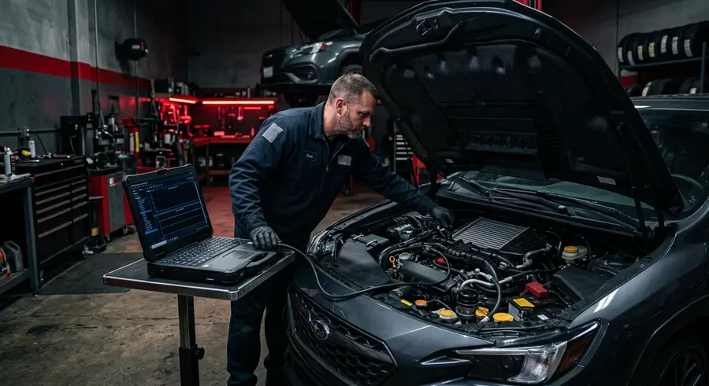

01
Mechanika i diagnostyka
Kompleksowe naprawy mechaniczne — od drobnych usterek po poważne remonty. Diagnostyka komputerowa pozwala szybko znaleźć źródło problemu.
- Diagnostyka komputerowa
- Naprawy silników i osprzętu
- Układy hamulcowe i zawieszenia
- Wymiana rozrządu, sprzęgła, olejów i filtrów
- Przygotowanie do przeglądu technicznego